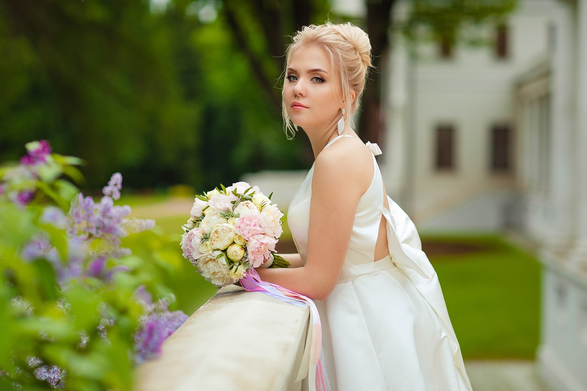

As a Dundee native and a passionate photographer, I hold a degree in Photography from the local university. Specializing in nature photography, my work showcases the beauty of the outdoors, a reflection of my deep connection with nature. With years of experience, I have honed a unique style that captures the beauty and emotion of each couple's special day, blending timeless and modern elements. My goal as your wedding photographer is to create images that will forever transport you back to your unforgettable wedding moments. Inspired by Dundee's stunning landscapes, my journey in photography began at a young age. My dedication and talent have earned me recognition and admiration, with my work featured in local exhibitions. I continue to expand my portfolio with exciting new projects, constantly seeking to push the boundaries of my craft.